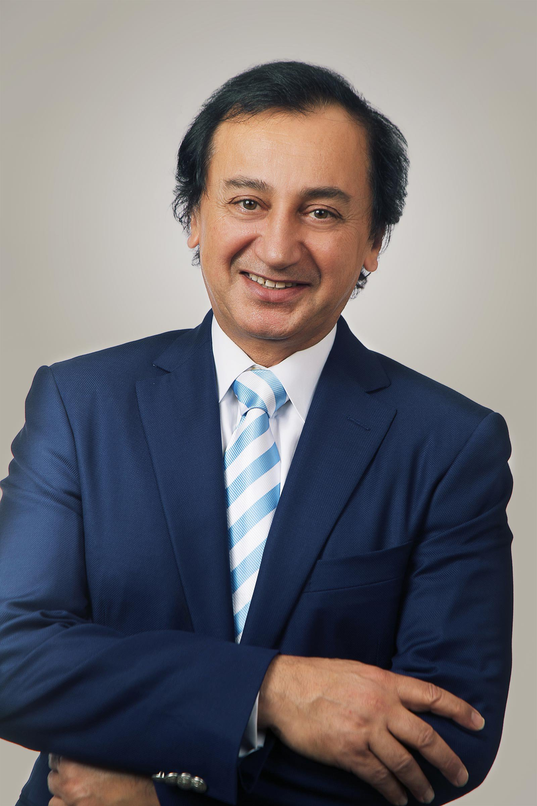
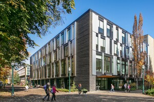
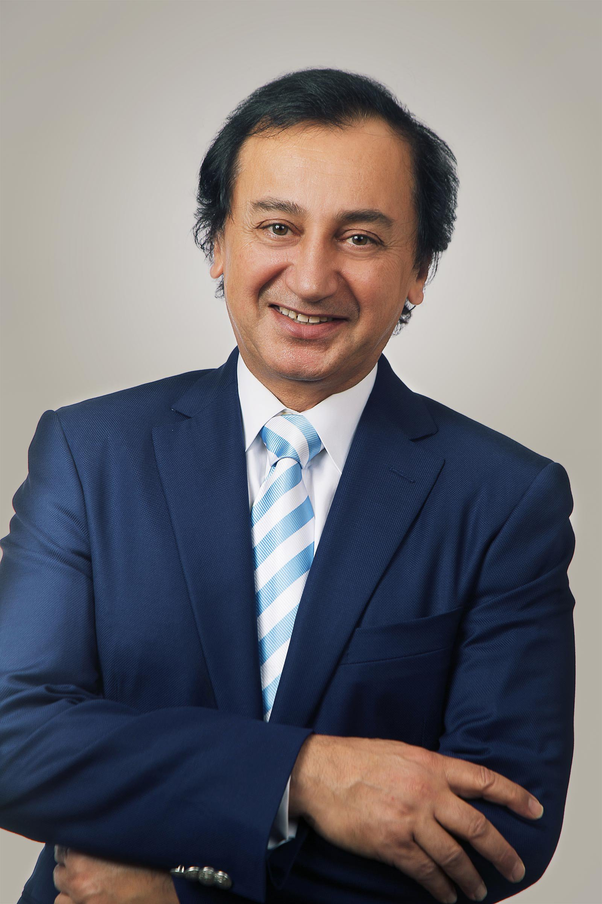
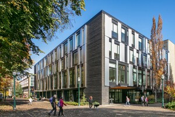

Fariborz Maseeh Hall was originally constructed in two sections by two different architects. The first section was completed in 1961 by Stewart & Richardson and was originally called South Park Hall. The second half, named South Park Hall East, was completed 8 years later in 1969 by Wolff Zimmer Gunsul Frasca.
In 1972 the hall was re-named Neuberger Hall in honor of Richard L. Neuberger who was a politician and supporter of Portland State University.
By 2009 many problems with the building had shown up. These problems included asbestos, an unrestrained structural system, poor plumbing, leaky roofs, little to no ventilation and poor electrical distribution. These problems forced the building to go under renovation.
Fariborz Maseeh Hall went under a $70 million dollar renovation from 2018-2019 resulting in renovations to classrooms, ventilation, removal of asbestos, seismic stability and the addition of an atrium.
During the renovation the name was transferred to the Richard and Maurine Neuberger Center which was originally named the Market Center Building. After the renovation had taken place the building was given its current name Fairboz Maseeh Hall, named after a generous donor who funded the building's renovation Dr Fairboz Maseeh. Dr Fairboz Maseeh earned his BS in Structural Engineering and his MS in Mathematics from PSU. Maseeh is now an expert in micro technology and is the founder of IntelliSense Corporation and The Massiah Foundation whose purpose is to improve the fields of education, health, literature, art and science.
Fariborz Maseeh Hall is located on the South Park Blocks of Portland State University campus on Broadway between Harrison and Hall Street.
For more information, visit the Portland State University webpage for the Fariborz Maseeh Hall.
 


